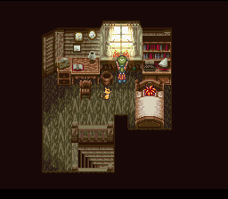
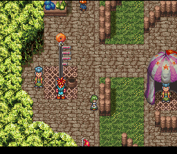
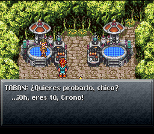

| The Millennial Fair |

Al empezar el juego, la mamá de Crono te levantara hablándote sobre la Feria Milenaria y, una vez que salgas de tu habitación, te dirá que tu amiga Lucca te ha invitado a ver su nuevo invento. Habla de nuevo con tu mama para que te de 200G y sal de la casa. Si necesitas saber acerca de las batallas, armas, objetos, habilidades, puntos de salvado y demás, puedes entrar a Mayor's Manor que se encuentra al sur de tu casa, ahí se encuentran varias personas que te darán información sobre los temas anteriores, además encontraras dos cofres, el de abajo contiene una tónica y el de arriba 100G. Después de que te informes de los temas anteriores, dirigete hacia el norte, a Leene Squre. |
 |
| Enemigos | Grupo | Nivel recomendado |
| -Gato | -Crono | -El que sea. |
|  | Volviendo a la trama del juego, dirigete hacia la parte superior de Leene Squre, donde se encuentra una campana en medio, y veras a una linda nina de cabello rubio, que con el más simple contacto que tengas con ella, la derrumbaras y caeran los dos al suelo. Cuando esto suceda levantate y habla con ella, entonces ella te preguntara sobre un collar que traia. Ve un poco hacia arriba y veras el collar de la niña, tomalo y vuelve a hablar con ella, entonces te preguntara si se lo devuelves, dile que si y se presentara como Marle, quien te pide acompañarte en tu visita por la Feria. |
El punto principal de este lugar es ir a la parte más hacia el norte, donde se encuentra Lucca con su nuevo invento. Una vez que te encuentres ahi habla con ella y te pedira ser voluntario para probar su nuevo invento (claro, alguien la tenia que hacer de conejillo de indias...). Subete al telepod de la izquierda y veras una escena donde Crono es teletrasportado hacia el telepod de la derecha, depues de esto habla con Marle quien se animara a subirse y aparecera otra escena en la que gracias al pendiente de Marle, se habre un portal del tiempo que se la traga y se la lleva a un lugar desconocido. Despues de esta situación, ve y recoje el collar de Marle y Lucca te dira que eres un gran caballero por animarte a rescatar a Marle (alguien tiene qu ser el heroe NO), entonces seras teletrasportado al mismo lugar al que fue teletrasportada Marle. |
 |